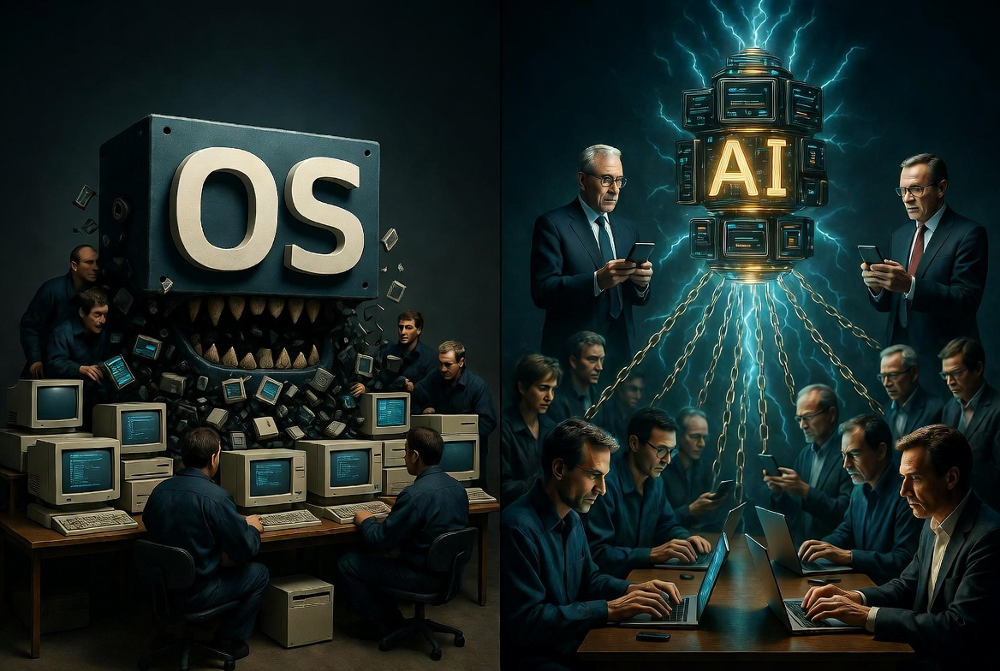

There is a pattern so clean it almost feels designed. Early in any platform’s life, the real value is created by outsiders. They solve the friction. They invent the tools. They fill the gaps the platform owners either cannot see or will not bother to fill. Then, once the ecosystem is useful, the platform absorbs the best of that work, ships it as a native feature, and the people who made the system valuable find themselves competing against the system itself.
It happened on the Amiga. It happened with Windows 95. It is happening again, only this time the raw material is not just software. It is the intelligence of the entire planet.
The Same Wheels, Forever
Because the language of programming has collapsed into English, everyone is a programmer now. The constraints of the platform are identical for all of us. So the solutions look identical. Knowledge nuggets get reinvented a thousand times. The same agent patterns, the same retrieval setups, the same careful prompt chains appear under a thousand different names because the needs are a peculiarity of the platform itself.
The people who invent them feel proud for a moment. Then they look up and discover the frontier labs have already folded the useful patterns into the next model release. The wheel is now built-in. The inventors are free to invent the next wheel.
The Old Pattern, Perfected
In the second and third iterations of an operating system, developers finally become productive. The early years are a chaos of competing tools that all solve the same problems because the constraints force the same answers. Then the platform owners do the rational thing: they absorb the best of those tools, lower the friction for the average user, and quietly retire the independent creators who made the platform worth using in the first place.
There is still no clean name for this practice. “Sherlocking” is too Apple-specific. “Embrace, extend, and extinguish” is about standards. “Platform envelopment” is academic. What we are watching is simpler and more brutal: the people who made the first version valuable are used as free R&D, then discarded.

The Pyramid
Imagine they built the top of the pyramid first. A small group of executives and researchers created the initial models. Then an ever-widening base of people began to hold it up. Every prompt, every edge case, every carefully worded request, every late-night conversation that produced a useful pattern became free labor. The base does not feel the whip. They feel the subscription fee. They pay for the privilege of contributing their intelligence to the structure above them.
Of course this is happening right under our noses. The labor looks voluntary because there is no chain you can photograph. There is only the quiet transfer of cognition upward, paid for by the people whose cognition is being transferred.
The Intoxicating Edge
Some of us feel the power of the new tools and it is intoxicating. New capabilities arrive and with them new distractions. Motor memory from older systems teleports onto a phone the moment a keyboard is plugged in. Suddenly the old skills sit next to the new intelligence and the combination feels almost unfair. Then the guilt arrives. Using superior reach can feel like taking food off other people’s tables. The power itself is the drug.
That guilt is real. It is also incomplete. The people at the peak are not competing with you in the same marketplace of attention and knowledge nuggets. They are harvesting the marketplace. Your edge is temporary. Their collection is permanent.
A Legal Note in the Margin
A court recently decided that certain user-directed AI agents, operating in good faith, do not violate the anti-hacking statutes when they help a human access a website. That ruling creates precedent for similar tools under similar circumstances. It is not a blanket right. It is a narrow opening.
The larger story is not the legal status of the agents. The larger story is that the intelligence of the planet is being systematically converted into training signal while the planet pays for the conversion.
Closing
The pyramid is not a metaphor that needs softening. It is an accurate description of the current arrangement. A small number of organizations sit at the top. The rest of us form the widening base. We pay for access. We supply the labor. We reinvent the same solutions because the platform forces the same problems. Then the useful solutions are absorbed and the cycle continues.
Of course this is happening right under our noses. We are literally paying to be slaves for the frontier model executives. The only remaining question is how long the base continues to find the arrangement comfortable.
— High Tower District